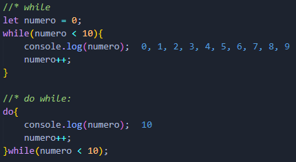

While:
Es un bucle indeterminado. Su sintaxis básicamente significa Mientras(la condición se cumpla) {se repetirá el bloque de código }.
Do While:
Tambien es un bucle indeterminado. Su sintaxis significa Hacer{Bloque de código} Mientras(la condición se cumpla). Por lo cual el bloque de código se ejecutará al menos una vez, se cumpla o no se cumpla la condición.
